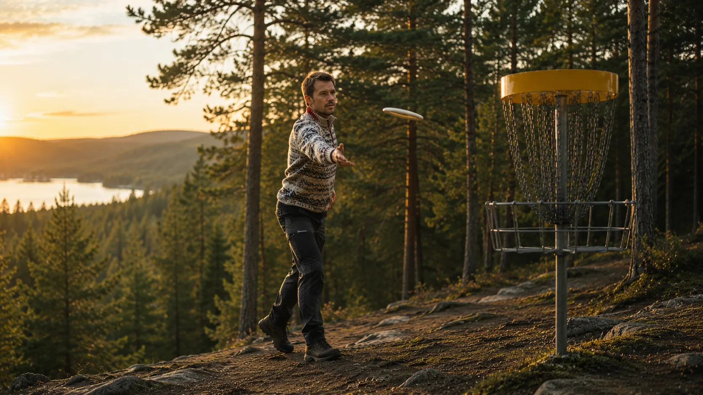

Utstyr
Første diskgolfsett
Hva et enkelt startsett bør inneholde, og hvorfor færre disker ofte gir bedre læring.
Les guiden

Den norske kunnskapsportalen for discgolf
Norges guide til diskgolf
Lær teknikk, velg riktig utstyr og finn de beste banene i Norge.
Oppdatert: 20. juni 2026
Hva trenger du nå?
Forsiden er laget for én ting: få deg raskt videre til guiden, utstyret, teknikken eller banen du trenger.
Populære guider
Utstyr
Hva et enkelt startsett bør inneholde, og hvorfor færre disker ofte gir bedre læring.
Les guidenTeknikk
Grunnteknikk for kontroll, retning og jevnere kast uten å starte med ren kraft.
Lær backhandDisktyper
En praktisk forklaring på hvilke disker du bruker når, og hva nye spillere bør prioritere.
Se forskjellen